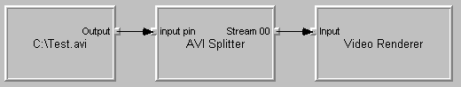

[The feature associated with this page, DirectShow, is a legacy feature. It has been superseded by MediaPlayer, IMFMediaEngine, and Audio/Video Capture in Media Foundation. Those features have been optimized for Windows 10 and Windows 11. Microsoft strongly recommends that new code use MediaPlayer, IMFMediaEngine and Audio/Video Capture in Media Foundation instead of DirectShow, when possible. Microsoft suggests that existing code that uses the legacy APIs be rewritten to use the new APIs if possible.]
DirectShow provides a debugging utility called GraphEdit, which you can use to create and test filter graphs.
GraphEdit is a visual tool for building filter graphs. With GraphEdit, you can experiment with a filter graph before you write any application code. You can also load a filter graph that your application creates, to verify that your application is building the correct graph. If you develop a custom filter, GraphEdit provides a quick way to test it: Simply load a graph with your custom filter and try running the graph. If you are new to DirectShow, GraphEdit is a good way to become familiar with filter graphs and the DirectShow architecture.
The following illustration shows how GraphEdit represents a simple filter graph.

Each filter is represented as a rectangle. Smaller squares along the edges of the filters represent pins. Input pins are on the left side of the filter, and output pins are on the right side. The arrows represent the connections between pins.
With GraphEdit, you can:
This section contains the following topics:
Â
Â